ENTER EXPERIENCE
ENTER EXPERIENCE

PROJECT BY
ALEXANDRU CLAUDIUSomewhere in Bucharest on Constantin-Radulescu Motru street, a walnut tree grows, undisturbed by the urban jungle surrounding it. His branches spread wide, aiming for the windows of the closest block of flats. For the first 4 floors up, summer feels cold and refreshing in the absence of too much light. Storms are mild and meditative, as the wind is dispersed by the concrete walls around the tree. But one night a storm is hitting hard. On the second floor, beyond the window, and inside safety, an ear contemplates the sounds of untamed nature. The thunders are loud and you may mistake them for car thieves. The cars certainly do. The rain is cold, yet it sounds like the street has been plucked out from the city and is now bathing in a deep frying cauldron. The wind is howling through every crack, making the whole neighborhood a giant church organ.
In the middle of this hellish requiem, an old man's blind stick hits, and hits and hits, desperately trying to figure out where he is. His rhythmic calls for help spark my curiosity. I pull the curtains and find myself in the middle of a concert. The blind man is hitting my window with his stick, but he knows where he is. He wants to show me something. He dances with the wind. Maybe the wind is a puppet master. The stick turns into a harp and with every bump in my window I hear a string hit and it takes me further and further away in time. Harp turns into a psalterium and I am already looking out my window from a castle. String hits again and turns into a lyre. The old man is not blind anymore. I can understand what he sings, but not his words. He sings about wind gods, and is bringing me the news about them. He traveled a lot, all around the world, and is full of stories.
I present to you a few stories I have recorded from the wind. Some are peaceful, some are violent. Some speak of heroes, some of villains. But all of them carry a movement that started a long time ago, perhaps from the soft wings of a butterfly, and witnessed a history longer than any life on earth.
I started recording the wind stories in 2019, but only made the project public in 2020, when, on the brink of the Covid-19 lockdown in Romania, most of us were staring outside our window, dreaming of freedom.